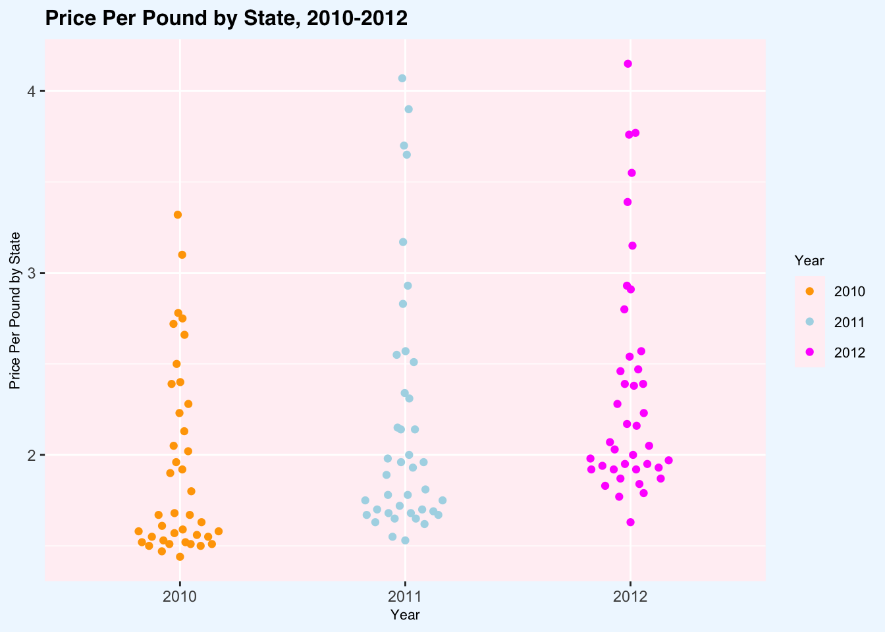
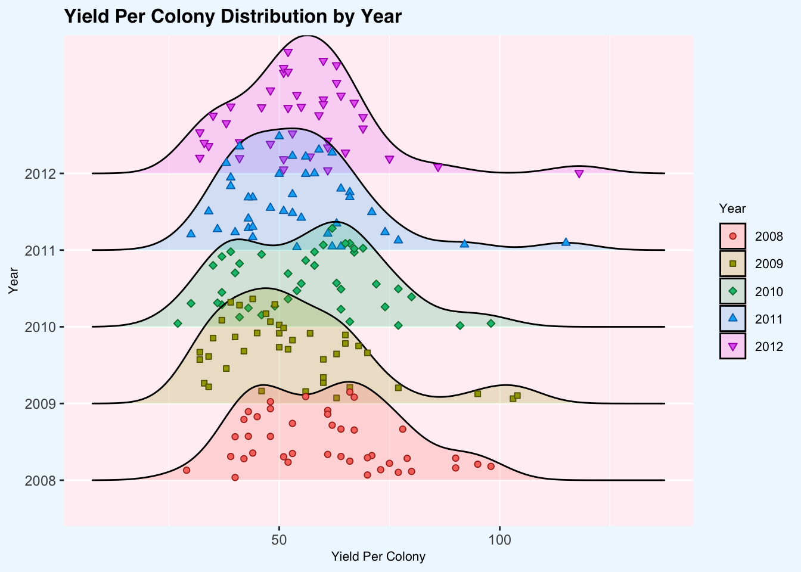
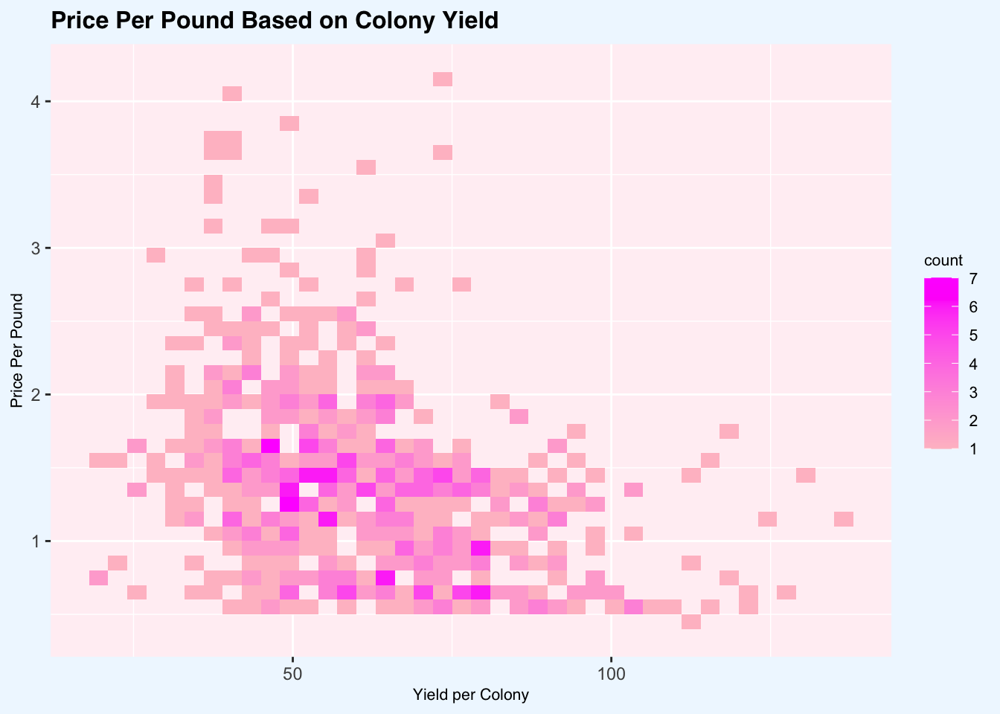
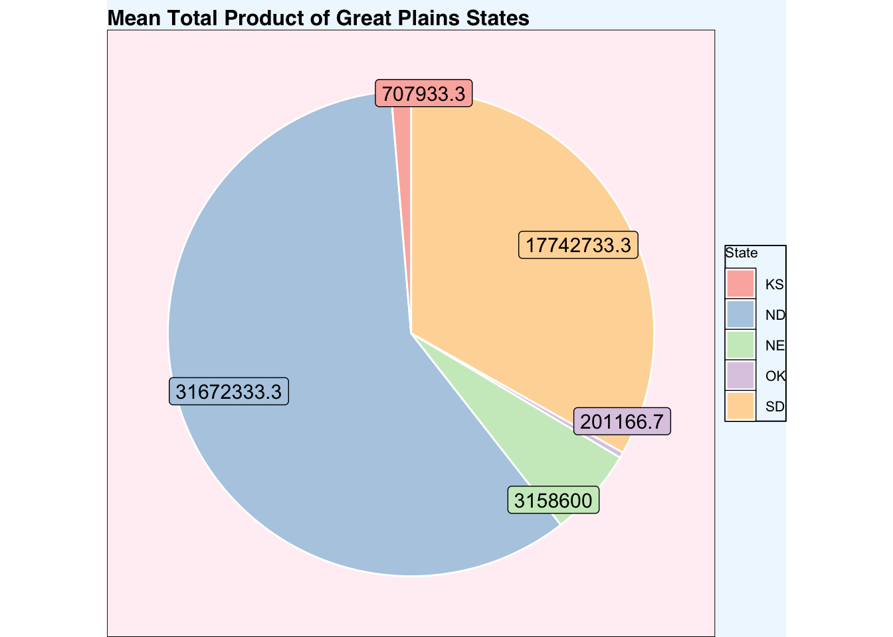
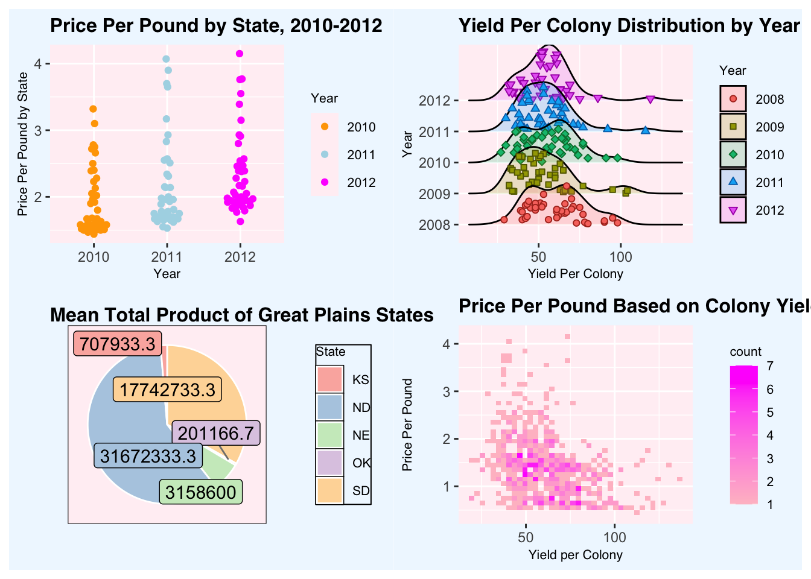

library(beeswarm)
library(ggplot2)
library(ggridges)
library(ggbeeswarm)
library(ggrepel)
library(dplyr)##
## Attaching package: 'dplyr'## The following objects are masked from 'package:stats':
##
## filter, lag## The following objects are masked from 'package:base':
##
## intersect, setdiff, setequal, unionlibrary(patchwork)
data <- read.csv("honeyproduction.csv")
dataP1 <- data%>%
filter(year == "2010" | year == "2011" | year == "2012")
dataP2 <- data%>%
select(year, yieldpercol, state) %>%
mutate(Cyear = as.character(year)) %>%
filter(Cyear == "2008" | Cyear == "2009" | Cyear == "2010" | Cyear == "2011" | year == "2012") %>%
group_by(Cyear)
dataP4 <- data%>%
group_by(state) %>%
summarize(meanprod = mean(totalprod)) %>%
filter(state == "ND" | state == "SD" | state == "NE" | state == "KS" | state == "OK") %>%
arrange(desc(state)) %>%
mutate(
fraction = meanprod / sum(meanprod),
ymax = cumsum(fraction),
ymin = lag(ymax, default = 0),
label_pos = (ymax + ymin) / 2,
label = paste0(round(meanprod, 1))
)p1 <- ggplot(dataP1, aes(x = factor(year), y = priceperlb, color = factor(year))) +
geom_quasirandom(width = 0.2) +
scale_color_manual(values = c("orange", "lightblue", "magenta")) +
labs(title = "Price Per Pound by State, 2010-2012",
x = "Year",
y = "Price Per Pound by State",
color = "Year") +
theme(
plot.title = element_text(family = "helvetica", face = "bold", size = 12),
axis.title = element_text(family = "helvetica", size = 8),
legend.title = element_text(size = 8),
legend.text = element_text(size = 8),
plot.background = element_rect(fill = "aliceblue", color = NA),
panel.background = element_rect(fill = "lavenderblush"),
legend.background = element_rect(fill = "aliceblue"))
p1
p2 <- ggplot(dataP2) +
aes(x=yieldpercol, y=Cyear, fill=Cyear) +
geom_density_ridges(
aes(point_color = Cyear,
point_fill = Cyear,
point_shape = Cyear),
alpha = .2,
point_alpha = 1,
jittered_points = TRUE) +
scale_point_color_hue(l = 40) +
scale_discrete_manual(aesthetics = "point_shape",
values = c(21, 22, 23, 24, 25)) +
labs(title = "Yield Per Colony Distribution by Year",
x = "Yield Per Colony",
y = "Year",
point_shape = "Year",
point_color = "Year",
point_fill = "Year",
fill = "Year") +
theme(
plot.title = element_text(family = "helvetica", face = "bold", size = 12),
axis.title = element_text(family = "helvetica", size = 8),
legend.title = element_text(size = 8),
legend.text = element_text(size = 8),
plot.background = element_rect(fill = "aliceblue", color = NA),
panel.background = element_rect(fill = "lavenderblush"),
legend.background = element_rect(fill = "aliceblue")
)
p2## Warning: The `scale_name` argument of `discrete_scale()` is deprecated as of ggplot2
## 3.5.0.
## This warning is displayed once every 8 hours.
## Call `lifecycle::last_lifecycle_warnings()` to see where this warning was
## generated.## Picking joint bandwidth of 6.44
p3 <- ggplot(data) +
aes(x=yieldpercol, y=priceperlb) +
geom_bin2d(binwidth = c(3,0.10)) +
scale_fill_gradientn(colors = c("pink", "magenta")) +
labs(title = "Price Per Pound Based on Colony Yield",
x = "Yield per Colony",
y = "Price Per Pound") +
theme(plot.title = element_text(family = "helvetica", face = "bold", size = 12),
axis.title = element_text(family = "helvetica", size = 8),
legend.title = element_text(size = 8),
legend.text = element_text(size = 8),
plot.background = element_rect(fill = "aliceblue", color = NA),
panel.background = element_rect(fill = "lavenderblush"),
legend.background = element_rect(fill = "aliceblue"))
p3
p4 <- ggplot(dataP4) +
aes(x="", y=meanprod, fill=state) +
geom_bar(stat="identity", width = 1, color = "white") +
coord_polar("y", start=0) +
geom_label_repel(
aes(y = label_pos * sum(meanprod), label = label),
x = 1.4,
nudge_x = 0.5,
show.legend = FALSE,
size = 4,
segment.color = "gray50"
) +
scale_fill_brewer(palette = "Pastel1") +
labs(title = "Mean Total Product of Great Plains States",
fill = "State") +
theme_void() +
theme(plot.title = element_text(family = "helvetica", face = "bold", size = 12),
legend.title = element_text(size = 8),
legend.text = element_text(size = 8),
plot.background = element_rect(fill = "aliceblue", color = NA),
panel.background = element_rect(fill = "lavenderblush"),
legend.background = element_rect(fill = "aliceblue"))
p4
p1 + p2 + p4 + p3 + plot_layout(ncol=2, widths = 1, heights = 1)## Picking joint bandwidth of 6.44 PNG: Cumulative Plot
{kind=link}